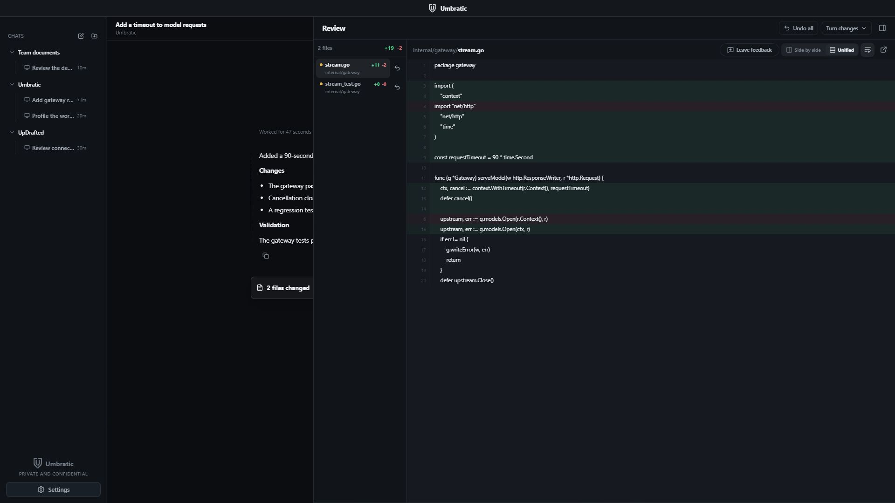

Founder & Lead Engineer 2025 - present
A complete private AI platform, from the desktop interface to the execution runtime and infrastructure.
- Architecture
- Electron/React desktop, Rust runtime, authenticated Go gateway, and local or company-managed model serving.
- Runtime design
- Dependency-aware parallel tools, context compaction, resumable state, bounded retries, and permission boundaries.
- Engineering
- I define interfaces and acceptance criteria, direct scoped agents, review patches, and validate the integrated system.
Engineering details
On-demand skills and Qdrant retrieval with team access filters. Isolated Git worktrees, review diffs, checkpoints, repeated-call guards, cancellation, and redacted telemetry. Artifact tools create and validate documents, spreadsheets, presentations, and PDFs.
The native rewrite reduced cold-start time by 96% and idle memory by 88% in the measured workflows.